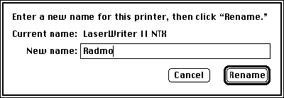

For System 7, the LaserWriter Font Utility was given the ability to handle drop-in
enhancements, called UTILs. These hybrid Macintosh-and-PostScript utilities are
provided with a rich parameter block and many useful callbacks. They offer a
straightforward method for putting useful tidbits of PostScript code to work--with a
real user interface.
The LaserWriter Font Utility is an obscure system software application that isn't even
installed by the System 7 Installer. Its main mission is to facilitate the downloading of
TrueType, PostScript Type 1, and PostScript Type 3 fonts to PostScript (and
PostScript-compatible) printers and printer hard disks. With System 7, however,
the innocuous LaserWriter Font Utility has been endowed with an extensible Utilities
menu and the ability to handle drop-in enhancements, calledUTILs. UTILs can be used
for a variety of interesting applications. For example:
UTILs are resources that are stored in the LaserWriter Font Utility's application
resource file. When the Font Utility is run, UTILs are collected into the Utilities
menu, listed by their resource name.
UTILs are generally modal and very task-specific. For example, one of the UTILs that
are distributed as part of the Font Utility, Start Page Options, allows users of
PostScript printers to decide whether or not the printer produces a "start page" when
turned on. When the user chooses this UTIL from the menu, the dialog box shown in
Figure 1 appears.
Figure 1 Example of a UTIL Dialog Box
A UTIL performs its task via PostScript code embedded in the UTIL or in its owned
resources. Therefore, UTILs are provided with routines that ease two-way
communication with the PostScript printer.
UTILs may own resources and allocate a block of private "global" memory. UTILs get
printer configuration information from the Font Utility and may also query the
printer directly for configuration information. This allows for device-specific UTILs.
Since most UTILs are expected to be implemented similarly, many application
facilities are provided to UTILs so that common code, like the bold outline for the
default button in Figure 1, is not duplicated in every UTIL. As a result, most UTILs are
very small (under 2K).
UTIL RESOURCES
UTILs are stored as resources of type 'UTIL'. Their IDs start at 128. However, the
range 128 through 149 is reserved by Apple, so you should use an ID of 150 or higher
for the UTILs you write. The UTIL's resource name defines the text of the menu item
that's appended to the Utilities menu.
The UTIL resource format is shown in Figure 2.
The first two bytes of the resource specify the version of the UTIL resource format,
which is currently $0001. Next comes resSpace, the first ID in the UTIL's resource
space. A UTIL'sresource space is the range of IDs that the UTIL may use for its owned
resources. The UTIL has 100 consecutive IDs, starting with resSpace. In general, to
calculate a given UTIL's resource space ID, use the formula
resSpace = 16000 + (UTILID - 128)* 100
where UTILID is the resource ID of the UTIL resource itself. For example, if your UTIL
resource were numbered 158, your UTIL's resource space would be calculated as
follows:
resSpace = 16000 + (158 -128)* 100 = 19000
Figure 2 UTIL Resource Format
In your UTIL's code, it's important to userelative resource IDs, in case your UTIL is
renumbered at installation time. There are several examples of relative resource IDs
in the code we'll be examining.
Following the version and resSpace, the UTIL resource contains offsets to the four UTIL
entry points (described in the next section). These offsets are from the beginning of
the UTIL resource. The beginning and order of entry points is flexible (see
"Variations on UTIL Entry Points" for details).
UTIL ENTRY POINTS
Let's take a quick look at the four UTIL entry points. Later, in the section "The Script:
NamerUTIL.c Code," we go into more detail.
Utility_Open. This routine is called by the Font Utility at startup, right after the
UTIL is loaded into memory. Utility_Open initializes the UTIL and allocates any
memory it requires. Utility_Open needs to return a Boolean result which, if true,
tells the Font Utility to install the UTIL in the Utilities menu. A false result from
Utility_Open, which might occur if there were insufficient memory, tells the Font
Utility not to install this UTIL.
VARIATIONS ON UTIL ENTRY POINTS
There's no requirement that the Utility_Open routine start at offset 20, nor is there
any specification of the order in which the routines are stored within the resource.
This allows noncode data to be stored in the UTIL resource along with the code. Figure 3
shows an example of PostScript code stored inside a UTIL resource, and the four
routines rearranged as desired.
While this method of storage works well for embedded PostScript code, remember that
other textual data (that's not PostScript code) should be stored in resources to
facilitate localization.
Figure 3 Arranging UTIL Routines
Utility_Delta. This routine is called by the Font Utility once after Utility_Open and
subsequently any time the user selects a different printer with the Chooser.
Utility_Delta is the means by which a UTIL informs the Font Utility whether the
UTIL's menu item should be dimmed or not (usually based on the characteristics of the
currently selected printer). The Font Utility provides a host of useful printer
configuration information, but should your UTIL require different or more specific
information, it may download PostScript code at this point and parse the response from
the printer. Utility_Delta needs to return true if the UTIL's menu item is to be
available, or false if it's to be dimmed.
Utility_Prime. This routine is called by the Font Utility to carry out the basic
function of the UTIL. It's called when the user chooses your UTIL's menu item from
the Utilities menu. The Start Page Options UTIL described earlier downloads some
PostScript code to determine the current state of thedostartpageflag in the printer,
puts up a dialog box, and then downloads more PostScript code to set the flag to the new
setting. The Utility_Prime routine needs to return a long word composed of (possibly
multiple) return codes. These codes tell the Font Utility of any special behavior it
should take upon return, such as refreshing its font lists.
Utility_Close. This routine is called by the Font Utility at quit time. Normally, at
this point your UTIL releases any memory it has allocated.
GOODIES IN THE LWFUPARMBLK STRUCTURE
When the LaserWriter Font Utility is starting up, it allocates one LWFUParmBlk for
each installed UTIL. That means that each UTIL's parameter block is unique, and the
same block is always passed to it. Each of the entry points described above takes as a
parameter a pointer to an LWFUParmBlk structure. This structure is discussed in
detail in the section "The Script: NamerUTIL.c Code," but here are the high points.
General information. This part of the structure includes the version of the
LWFUParmBlk structure, the base resource ID for this UTIL's resource space, and a
storage field into which the UTIL may place a handle to some global storage space.
Driver information. You're provided with an FSSpec pointing to the currently
selected printer driver. Tempting as this might be, you should use this only to
retrieve the driver's version, allowing your UTIL to put the driver version in a dialog
box.
Printer information. This includes the name of the current printer and a host of
printer configuration information. Also included is a handle to the Font Utility's own
standard Macintosh print record, which allows you to print via the Printing Manager
if you wish.
Callback information. This is a rich set of callbacks into the Font Utility. There's
also a pointer to the Font Utility's QuickDraw globals and pointers to two large I/O
buffers you can use for printer communication. The callback routines can be grouped
into three major categories:
Now that we've got an overview of how UTILs fit into the LaserWriter Font Utility,
let's take a closer look at a specific example, NamerUTIL, provided on theDeveloper CD
Series disc. NamerUTIL, which appears in the Utilities menu as Rename Printer,
allows the user to rename the currently selected printer.
Figure 4 shows part of the Utilities menu, including the Rename Printer UTIL.
Figure 4 UTILs in the Utilities Menu
Rename Printer's Utility_Prime routine presents the user with the dialog box shown
at the top of Figure 5. The dialog is smart enough to limit the length of the new name to
30 characters and disallow various illegal characters. If the user clicks Rename, the
UTIL transmits a PostScript program to rename the printer as specified. The UTIL
then puts up one of the two alerts shown in Figure 5, depending on whether the printer
was successfully renamed or not.
That's the basic user interface design for the Rename Printer UTIL. So how do we make
it work? First, let's take a look at how you rename a printer in PostScript.
RENAMING A PRINTER IN POSTSCRIPT
The PostScript code to rename a printer is trivial.
serverdict begin 0 exitserver
statusdict begin
(NewPrinterName) setprintername
end
The first line entersserverdict, a dictionary of operators for controlling the
PostScript server, then exits the server loop with theexitserveroperator. The 0 is
the system administrator password, which is almost universally 0. (In fact, the
LaserWriter driver won't work correctly if the password has been changed, so it's OK
for us to assume it's 0 and hard-code the password.) The net effect of exiting the
server loop is to allow us to change persistent parameters, like the printer name.

Figure 5 Rename Printer Dialog Box and Alerts
The next line entersstatusdict, a dictionary containing machine- and
configuration-dependent operators. The printer is renamed with
thesetprinternamePostScript operator. The UTIL replacesNewPrinterName with the
new name provided by the user.
NAMERUTIL AND ITS SOURCE FILES
NamerUTIL, the Rename Printer UTIL, is made up of five source files. Two of them,
UTIL.h and UTILHead.a, are provided on the CD as general interface files and are the
same for all UTILs. Figure 6 gives an overview of the source files and their
relationships. We'll look at the source files whose names begin with "Namer" and at
the makefile.
Figure 6 Source File Relationships
NamerUTIL.c. This C language source file is the bulk of the code for NamerUTIL. It
contains the four entry points, and three other routines that carry out NamerUTIL's
job. Thanks to all the Font Utility's callbacks, it's fairly straightforward.
NamerUTIL.r. This Rez input file contains descriptions of all the NamerUTIL's
owned resources. Since the owned resources' IDs depend on the ID of the UTIL
resource itself, the resource IDs are specifiedrelatively , that is, by an offset from a
variable named ResSpace, which is defined in the makefile.
NamerResIDs.h. This file contains #define statements for all the resource IDs. It's
included by both NamerUTIL.c and NamerUTIL.r.
MakeFile. MakeFile ties all the pieces together. For development, it's easiest to use
Rez to place NamerUTIL's resources into a copy of the Font Utility. Use Rez's- aoption
to append the resources to those already present in the LaserWriter Font Utility
application file. Then link NamerUTIL's UTIL resource directly into the Font Utility as
well. Finally, by launching the Font Utility, you can test your UTIL. That's the
approach of the makefile we'll be looking at. The CD contains an alternate makefile that
generates a standalone file and an application called UTILInstall for installing UTILs
into the Font Utility.
Let's dive right into NamerUTIL.c.
Here's the first part of NamerUTIL.c in MPW 3.2 C.
/* NamerUTIL.c - a UTIL that allows the LaserWriter Font Utility to
rename PostScript printers. */
/* --- Includes --------------------------------------------------*/
#include <Types.h> /* Macintosh includes */
#include <Memory.h>
#include <Resources.h>
#include <QuickDraw.h>
#include <Dialogs.h>
#include <Printing.h>
#include <ToolUtils.h>
#include <Errors.h>
#include "UTIL.h" /* Standard UTIL constants and */
/* structures */
#include "NamerResIDs.h" /* "Relative" resource IDs */
/* --- Defines ------------------------------------------------ */
#define kMinVersion 1 /* Minimum version we'll run */
#define kPSErrStr 1 /* Strings in 'STR#' kNamerStrs */
#define kExitVerStr 2
#define kRenameStartStr 3
#define kRenameEndStr 4
#define kNDDummy 0 /* Item #s in Namer dialog box */
#define kNDRename 1
#define kNDCancel 2
#define kNDNewName 6
#define kNDBoldOutline 7
#define kReturnKey 0x0d /* Key and char code constants */
#define kEnterKey 0x03
#define kBackspaceKey 0x08
#define kAtChar '@'
#define kColonChar ':'
#define kLowASCII 0x7f
#define kMaxNameLength 30 /* Maximum printer name length */
#define kNameBufLen 40 /* Size of printer name buffers */
#define kCompStrLen 80 /* Size of parse string buffers */
/* --- Prototypes --------------------------------------------- */
pascal Boolean Utility_Open(LWFUParmBlk *pb);
pascal Boolean Utility_Delta(LWFUParmBlk *pb);
pascal unsigned long Utility_Prime(LWFUParmBlk *pb);
pascal void Utility_Close(LWFUParmBlk *pb);
pascal short ExitBufferRtn(short length, LWFUParmBlk *pb);
pascal Boolean NamerFilter(DialogPtr TheDialog,
EventRecord *TheEvent, short *ItemHit);
short RenamePrinter(LWFUParmBlk *pb);
At the beginning are the includes. Besides the usual Macintosh Toolbox and OS includes,
we include UTIL.h, a header file used by all UTILs, and NamerResIDs.h. The latter, as
mentioned earlier, contains constants that we'll add to the resSpace field of the
LWFUParmBlk to form valid resource IDs. Sharing this file with NamerUTIL.r makes
maintenance easier.
The #defines are for indices into NamerUTIL's owned STR# resource, item numbers
for the dialog box, various keyboard and character constants, and buffer sizes.
Below the constant definitions are prototypes for NamerUTIL's routines. You can see
the standard four entry points, Utility_Open, Utility_Delta, Utility_Prime, and
Utility_Close, plus three other routines, which will be called from the Prime routine.
THE SUPPORTING CAST: UTILITY_OPEN, UTILITY_DELTA, AND
UTILITY_CLOSE
The Utility_Open routine is exceedingly simple. It checks that the parameter block
passed in pb is equal to or newer than the minimum version. In the future, the
LWFUParmBlk structure may be extended--for instance, to add new fields or
callbacks. Since subsequent versions of the UTIL parameter block are defined to
beextensions , a UTIL can function with any version of the LWFUParmBlk greater than
or equal to the version provided when the UTIL was written. Thecurrent version is
$0001. If the parameter block is new enough, Utility_Open returns true and we're on
our way.
pascal Boolean Utility_Open(LWFUParmBlk *pb)
{
return(pb->version >= kMinVersion);
}
Some UTILs might want to allocate memory in their Utility_Open routine and store a
handle to the storage in pb->uStorage. If the allocation failed, Utility_Open could
return false, indicating that it should not be installed into the Utilities menu.
If you thought NamerUTIL's Utility_Open was trivial, take a look at Utility_Delta. This
entry point is called for each UTIL, once at startup and subsequently every time the
user chooses a different printer with the Chooser. Since NamerUTIL can rename any
PostScript printer, its Utility_Delta always returns true, indicating to the Font
Utility that the Rename Printer menu item should always be available (as opposed to
dimmed). Utility_Delta is provided to facilitate device-specific UTILs that might, for
instance, want to send out PostScript code to determine the printer's specific make and
dim the menu item if the UTIL isn't applicable to the chosen printer.
pascal Boolean Utility_Delta(LWFUParmBlk *pb)
{
#pragma unused(pb)
return(true);
}
The #pragma keeps the C compiler from barking at us about not using the pb
parameter.
Let's save the best for last and dispatch with Utility_Close, so we can get on with the
meat of the UTIL, Utility_Prime. Since Utility_Open didn't allocate any storage, the
Utility_Close routine can simply return without doing anything. Even though the
routine may do nothing,it must be included , and will be called at quit time.
pascal void Utility_Close(LWFUParmBlk *pb)
{
#pragma unused(pb)
}
THE STAR OF THE SHOW: UTILITY_PRIME
All the work NamerUTIL performs is handled by the Utility_Prime routine, shown
here:
pascal unsigned long Utility_Prime(LWFUParmBlk *pb)
{
if (RenamePrinter(pb))
return(urCheckPrinter | urCheckFeatures | urEraseLists);
else return(urNoAction);
}
Utility_Prime calls RenamePrinter to do most of its work. RenamePrinter returns a
Boolean result that indicates, if true, that the printer was successfully renamed or, if
false, that there was an error or the user canceled the process. If RenamePrinter
returns true, Utility_Prime returns a conglomerate return code that indicates to the
Font Utility that it should recheck its connection with the chosen printer, recheck the
printer's features, and forget any font lists it might have for the printer. If the user
canceled or there was an error, Utility_Prime tells the Font Utility to take no special
action.
Let's look at the beginning of RenamePrinter:
short RenamePrinter(LWFUParmBlk *pb)
{
DialogPtr nameDlg; /* The Rename dialog */
short itemHit; /* From ModalDialog */
char psBuffer[150]; /* Buffer for PostScript */
char newName[kNameBufLen]; /* New printer name */
char blankStr[1]; /* Handy empty string */
short status; /* ExitBufferRtn's status */
Point where; /* For positioning dialog */
LWFUCallBackInfo *cb; /* Pointer to callbacks */
Boolean doneFlag = false; /* Flags to dismiss */
Boolean renameFlag = false; /* Flags to rename */
Boolean retVal = false; /* True/false on success */
*blankStr = 0;
cb = pb->callBacks;
Here we declare the local variables. The most important locals are nameDlg, the dialog
pointer; status, which tests the success of the rename operation; and cb, a cached
pointer to the callback array. We set blankStr to be an empty string (for use in
ParamText calls and such) and initialize cb's value.
Creating the set. Now, we set up our Namer dialog box.
nameDlg = GetNewDialog(pb->resSpace + kNamerDlg, nil, (WindowPtr)-1);
cb->CenterDialog(nameDlg, &where);
MoveWindow(nameDlg, where.h, where.v, true);
ParamText(pb->printerInfo->currentPrinterName, blankStr, blankStr,
blankStr);
cb->SetPText(nameDlg, kNDNewName, blankStr);
cb->UserItem(nameDlg, kNDBoldOutline, cb->BoldOutlineItem);
(LWFUParmBlk *)((DialogPeek)nameDlg)->window.refCon = pb;
ShowWindow((WindowPtr)nameDlg);
RenamePrinter gets the Namer dialog box from the resource file with a call to
GetNewDialog. Notice the way the resource ID is specified as pb->resSpace +constant
. This relative resource ID convention makes the code flexible in case the UTIL was
renumbered for some reason. You'll see this convention throughout NamerUTIL.
The design for the Font Utility tried to encompass the most common types of operations
UTIL writers would be performing and provided those routines as callbacks. One
example is centering a dialog box. The CenterDialog callback returns a point--the top
left coordinates for a MoveWindow call.
RenamePrinter then installs the current printer name as parameter ^0, so the user
can see the current printer name in the dialog box. RenamePrinter presets the new
printer name to blank and installs a userItem to put the bold outline around the dialog
box's default button. Again, notice the handy callbacks.
The dialog filter, NamerFilter, needs access to the LWFUParmBlk. To allow this,
RenamePrinter installs a pointer to the block in the dialog window's refCon field.
The dialog template resource for the Namer dialog box specifies a hidden window, so all
the fuss we've just gone through hasn't been disturbing the poor user. Once finished,
RenamePrinter puts the dialog box on the screen with ShowWindow.
Behind the scenes. Next comes the ModalDialog loop.
do {
ModalDialog(NamerFilter, &itemHit);
switch(itemHit) {
case kNDRename: /* Rename */
renameFlag = doneFlag = true;
break;
case kNDCancel: /* Cancel */
doneFlag = true;
break;
}
} while (!doneFlag);
HideWindow((WindowPtr)nameDlg);
This is your average modal dialog hit-loop. RenamePrinter waits for the user to
dismiss the dialog box, setting the renameFlag appropriately, then hiding the dialog
window (but not disposing of it yet). RenamePrinter filters the dialog events with
NamerFilter, shown here:
pascal Boolean NamerFilter(DialogPtr TheDialog,
EventRecord *TheEvent, short *ItemHit)
{
unsigned char theKey; /* From the event record */
short retVal = false; /* The return value */
char newName[kNameBufLen]; /* The new name */
LWFUParmBlk *pb; /* The parameter block */
/* Retrieve a pointer to the parameter block. */
pb = (LWFUParmBlk *)((WindowPeek)TheDialog)->refCon;
/* Trap keyDown and autoKey events. */
if (TheEvent->what == keyDown || TheEvent->what == autoKey) {
/* Grab the ASCII character code from the event record. */
theKey = TheEvent->message & charCodeMask;
if (theKey == kReturnKey || theKey == kEnterKey) {
/* Return or Enter? Hit the default button. */
retVal = true;
*ItemHit = kNDRename;
} else if (theKey == kAtChar || theKey == kColonChar ||
theKey > kLowASCII) {
/* "@", ":", or a high ASCII char? Beep and tell */
/* ModalDialog to ignore the event. */
SysBeep(5);
retVal = true;
*ItemHit = kNDDummy;
} else if (theKey != kBackspaceKey) {
/* Key other than Backspace? Check length to decide. */
pb->callBacks->GetPText(TheDialog, kNDNewName, newName);
if (*newName >= kMaxNameLength) {
SysBeep(5);
retVal = true;
*ItemHit = kNDDummy;
} else retVal = false;
}
} else retVal = false;
return(retVal);
}
This filter keeps users from entering an illegal printer name. Specifically, it
disallows ampersand (@) and colon (:) characters (reserved for forming NBP
network names) and high ASCII characters (because PostScript is technically 7-bit
ASCII), and it limits the length of the name to kMaxNameLength (30). The filter can
make use of callbacks, because we put a pointer to our LWFUParmBlk into the
window's refCon field.
Performance time. If renameFlag is true, RenamePrinter performs the rename
operation.
Here's the code:
if (renameFlag) {
GetIndString(psBuffer, pb->resSpace + kNamerStrs,
kRenameStartStr);
cb->GetPText(nameDlg, kNDNewName, newName);
cb->Pstrcat(psBuffer, newName);
cb->GetAndAppend(psBuffer, pb->resSpace + kNamerStrs,
kRenameEndStr);
In constructing an appropriate PostScript program to rename the printer, we get the
first part of the PostScript code from our STR# resource, append the new name the
user provided, and finally tack on the end of the PostScript code. The handy
Pascal-string utility callbacks were included for just this situation. We end up with
our little PostScript renamer program in psBuffer, as a Pascal string.
Now things start getting a little more interesting. The code that actually downloads
psBuffer to the printer and checks the results is as follows:
if ((status = cb->OpenPrinter()) == noErr) {
status = cb->DoWrite(psBuffer + 1, (short)*psBuffer,
sendEOF, pb, ExitBufferRtn);
cb->ClosePrinter();
}
RenamePrinter opens a connection to the printer with the callback OpenPrinter. If
there's no error, RenamePrinter uses DoWrite to write psBuffer to the printer. The
sendEOF argument tells DoWrite to send an end-of-file indication to the printer after
writing the specified text to the printer. Notice that ExitBufferRtn, the "output
parser," is included as a parameter to DoWrite.
Here's the code for ExitBufferRtn:
pascal short ExitBufferRtn(short length, LWFUParmBlk *pb)
{
Handle dataHandle; /* "Handlized" response */
short status; /* The return code */
char psErrorText[kCompStrLen]; /* Buffer for "fail" test */
char exitText[kCompStrLen]; /* Buffer for "success" test */
GetIndString(psErrorText, pb->resSpace + kNamerStrs, kPSErrStr);
GetIndString(exitText, pb->resSpace + kNamerStrs, kExitVerStr);
PtrToHand(pb->callBacks->PAPReadBuffer, &dataHandle, length);
if (Munger(dataHandle, 0, psErrorText + 1, *psErrorText,
nil, 0) >= 0)
status = printerError;
else if (Munger(dataHandle, 0, exitText + 1, *exitText,
nil, 0) >= 0)
status = noErr;
else status = printerError;
DisposHandle(dataHandle);
return(status);
}
DoWrite constantly polls the printer for some response. If anything comes back from
the printer (like an error, or some verification that the operation was completed),
it's sent to ExitBufferRtn. The return value from ExitBufferRtn is passed back to
DoWrite, and subsequently returned as DoWrite's return value. This allows
ExitBufferRtn to essentially "post" an error. The only predefined error is
printerError, which is defined in UTIL.h. You may define your own error codes as
well.
In order to return an error code, ExitBufferRtn needs to look for some sign of success
or failure from the printer. To determine failure, it looks for "%%[ Error: ", which
is the beginning of all error strings that are returned by PostScript printers. We
don't care about parsing the rest, sinceany error is enough for us to return
printerError.
To detect success, ExitBufferRtn searches for the string "%%[ exitserver:
permanent", which is the beginning of "%%[ exitserver: permanent state may be
changed ]%%". This string tells us that theexitserverpassword was correct. We
should always see this response from the printer. These two search strings are stored
in the resource file. Observe the relative resource IDs.
You may have noticed that a characteristic of UTILs seems to be avoiding work by using
all those handy callbacks. But now we have to search for a string. Yuck! Well, let's
cheat. We'll take the momentary memory hit and use PtrToHand to create a handle to a
copy of the response from the printer. Then we'll search with every hacker's dream
routine, Munger. After ExitBufferRtn sets status, it disposes of the temporary handle
and returns.
Back in RenamePrinter, we set our local variable status from the DoWrite call. Since
status was passed through from ExitBufferRtn, RenamePrinter can tell whether or not
the rename operation was successful. Either way, it's really important to remember to
close the connection. The rule is,if the OpenPrinter call succeeded, do a ClosePrinter
call, even if the code in between failed .
Posting the reviews. Now that the ugly transmission-reception stuff is finished,
let's tell the user what's going on.
cb->UseCursor(0);
if (status == noErr) {
retVal = true;
ParamText(newName, blankStr, blankStr, blankStr);
cb->PositionAlert(pb->resSpace + kVerifyAlrt);
CautionAlert(pb->resSpace + kVerifyAlrt, nil);
} else {
retVal = false;
cb->PositionAlert(pb->resSpace + kFailAlrt);
StopAlert(pb->resSpace + kFailAlrt, nil);
}
}
Since the user needs to go out and choose the newly renamed printer with the Chooser,
RenamePrinter puts up an alert if the rename operation is successful, half as a
reminder to choose the printer, and half as a reminder of the new printer name. (See
"Where'd That Printer Go?") If status, the local variable, was nonzero,
RenamePrinter puts up a general error alert. In any case, RenamePrinter sets the
return value appropriately, since Utility_Prime needs to know whether the printer is
renamed, so that it can return the appropriate flags to the Font Utility.
Finally, RenamePrinter disposes of the (currently hidden) Namer dialog and returns.
DisposDialog(nameDlg); return(retVal); }
That's basically it! Now let's glance at the resource file, NamerUTIL.r.
The only remarkable feature of NamerUTIL's resource file, NamerUTIL.r, is its use of
relative resource IDs. For example, here's NamerUTIL's main dialog box DLOG
resource:
resource 'DLOG' (ResSpace + kNamerDlg, "Namer", purgeable) {
{40, 20, 162, 412},
dBoxProc, invisible, noGoAway, 0x0,
ResSpace + kNamerDlg,
""
};
Note that both the resource ID of the DLOG resource itself and the ID of the associated
DITL resource are specified relatively. NamerUTIL.r also contains the following
resource definition:
resource 'uvrs' (ResSpace + kVersion) {
0x01, 0x00, final, 0x00,
verUS,
"1.0",
"1.0, © 1991 Apple Computer, Inc."
};
The 'uvrs' resource is encouraged but not required. A 'uvrs' resource is structured
exactly like a 'vers' resource. It stands forUTIL version, and should have the same ID
as the UTIL resource. The 'uvrs' resource provides a handy way to attach your
copyright information to the UTIL.
Here's NamerUTIL's makefile:
# makefile - make rules for NamerUTIL
# Set up vars that describe UTIL's ID and resource space base
ID UTILID = 150
ResSpace = 18200
UTILName = "Rename Printer..."
COptions = -b -mbg full -sym off -r
AOptions = -d ResSpace={ResSpace}
LOptions = -sym off
ROptions = -a -d ResSpace={ResSpace}
Objects = UTILHead.a.o NamerUTIL.c.o "{Libraries}Interface.o"
LWFU ƒ LWFU.bak {Objects} NamerResources.rsrc MakeFile
Duplicate -y LWFU.bak LWFU
Rez {ROptions} -o LWFU NamerUTIL.r
Link {LOptions} ∂
-rt UTIL={UTILID} ∂
-sn Main={UTILName} ∂
-o LWFU {Objects}
Beep 1c,5 1e,5 1g,5 2c,5 2c,5,0 1g,5 2c,10
This makefile assumes you have a copy of the LaserWriter Font Utility named
LWFU.bak in your target directory. It makes a copy, called LWFU, and Rezzes and links
your UTIL directly into LWFU. Naturally, you can't distribute a modified version of the
LaserWriter Font Utility (see "Distribution of UTILs"), but for development, this is a
really handy way to test your UTILs. The Beep command to play "CHARGE!" at the end is
optional. I put it there to remind me that I'd rather be at the ball game.
Our little NamerUTIL is a useful example of what you might do with a LaserWriter
Font Utility UTIL. It does not, however, use every callback and exercise every option
available to it. The CD contains a UTIL specification that lists prototypes for all the
callbacks and more detailed descriptions of the fields of the LWFUParmBlk. There's
also a version of the NamerUTIL sources that's set up for use with the UTILInstall
application, for those who are hoping to write the first modal-word-
processor-spreadsheet-communications-package UTIL.
A great aspect of UTILs is their hybrid nature--a unique combination of Macintosh
code and PostScript code. So where you would have had to analyze a text file that came
back from your PostScript code, you can write a UTIL that actually does something
useful with the output. UTILs are also a great chance for hardware manufacturers to
make those device-specific test and calibration pages accessible to common users.
So go for it! If you've got a collection of really cool PostScript hacks sitting around,
here's your chance to give them a shiny faceplate and loose them on the unsuspecting
world!
Since you can't distribute modified Apple system software, how can you distribute
UTILs? The answer is to distribute them as UTIL files along with the UTILInstall
application. UTILInstall (included with the source code on the Developer CD Series
disc) is specifically designed for installing UTILs into the LaserWriter Font Utility. It
requires that you generate a file, containing the UTIL and all its owned resources, that
has a creator of 'UtIn' and a type of 'UTIL'. Also, you must supply a resource of type
'USPC' ( UTIL specification) that tells the UTILInstall program what resources you
own. This is the Rez format of the USPC resource:
type 'USPC' {
integer = $$Countof(ResourceList);
array ResourceList {
unsigned longint;/* Resource type */
integer; /* Resource ID */
};
};
You provide a USPC resource with the same ID as your UTIL. The USPC resource lists
the resource type and ID for every resource your UTIL owns. This tells the UTILInstall
program exactly what resources to move, plus it facilitates the renumbering of your
owned resources should there be an ID conflict.
For instance, suppose you've built your UTIL with UTIL ID 150 and ResSpace 18200.
If the user attempts to install your UTIL into a copy of the Font Utility that already
contains a UTIL with the ID 150, UTILInstall renumbers your UTIL and all its owned
resources as specified in the USPC list.
Given a little thought, you might wonder what happens to resources that refer to other
resources by ID, like DLOG and ALRT resources. Unfortunately, UTILInstall doesn't
provide a comprehensive renumbering facility. It does, however, have special cases
for renumbering DLOG and ALRT resources. Other resource types that refer to other
resources by ID should be avoided if you plan to distribute your UTIL with UTILInstall.
For a complete example of the use of USPC resources, see the alternate NamerUTIL
sources and the UTILInstall source code on the CD.
We rename the printer behind the Font Utility's back (and the Chooser's, for that
matter). The name and zone information for the currently chosen printer is stored in
some string resources in the System file. After we rename the printer, the strings in
the System file still contain the old printer name.
The return value urCheckPrinter causes the Font Utility to attempt to open a PAP
connection with the "currently chosen printer." Since the name of the currently
chosen printer has not been updated, the PAPOpen call fails, and the user gets the alert
shown in Figure 7. This is an unfortunate side effect of renaming the printer.
The solution is to tell the Chooser that we have chosen a printer in the same zone with
our new name, but there's no officially sanctioned way to do this. Future versions of
system software will remedy this situation.
Figure 7A NamerUTIL Side Effect
BRYAN K. RESSLER, a.k.a. "Beaker," is a bloodstained "binary vivisectionists" who
regularly cuts into live code just to see what happens. He terrorized the University of
California, Irvine for four years, and just to get rid of him, they gave him a B.S. in
computer science. Beaker did the System 7 revision of the LaserWriter Font Utility.
Now, when the medication wears off and he's allowed out of his cell, he writes sound
and MIDI applications, composes marginal music, and sharpens his "binary scalpel."*
THANKS TO OUR TECHNICAL REVIEWERS Richard Hu, Dave Johnson, Scott "Zz"
Zimmerman*